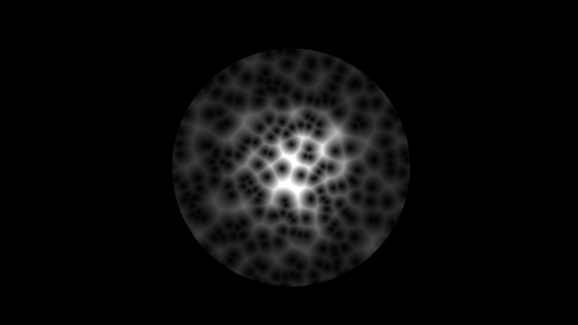

Summary
With the combination of wanting to practice shader coding and watching the Khan Academy "Pixar in a box" that talked about Voronoi Pattern I decided to create a fragment shader for this purpose. The project was a personal project during free time.
I started out with a simple scene in OpenGL with a single square. I used the vertex shader to send positions and normals of the points on the square to the fragment shader.
The fragment shader implements the Voronoi pattern by placing a set number of seeds randomly over the surface and then calculating the distances to the nearest seed for all other points. The points that have the same distances to more than one seed is highlighted and creates the borders around the cells. All points within one cell has the smallest distance to that particular seed than to any other.
The project was developed further by integrating Phongs local reflection model as well as using a sphere instead of a square.
Technical Walkthrough
A Voronoi Diagram is the partitioning of a plane into different regions based on their distance to points in a specific subspace of the plane. We call the set of points for seeds and the number of seeds are set beforehand. We then create cells around the seeds that we call Voronoi Cells and all the points inside the same cell share the property that they are all closer to the seed for that cell than to any other seed on the plane.
I generate random numbers according to the random function given in "The Book of Shaders". My first implementation is using a number of 200 seeds, placed randomly on the plane. The inverted image is generated by starting with white as background and then subtracting color value from the minimum distance points instead of adding.
A further update was added with the possibility to display the seeds as points to get a clearer visualization if needed. Here with a smaller and larger number of generated seeds.
The project was then integrated with the Phong's local reflection model to get better visual appearance. I implemented the shader on a sphere in OpenGL.